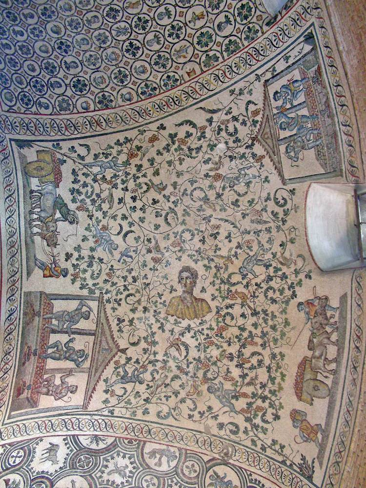
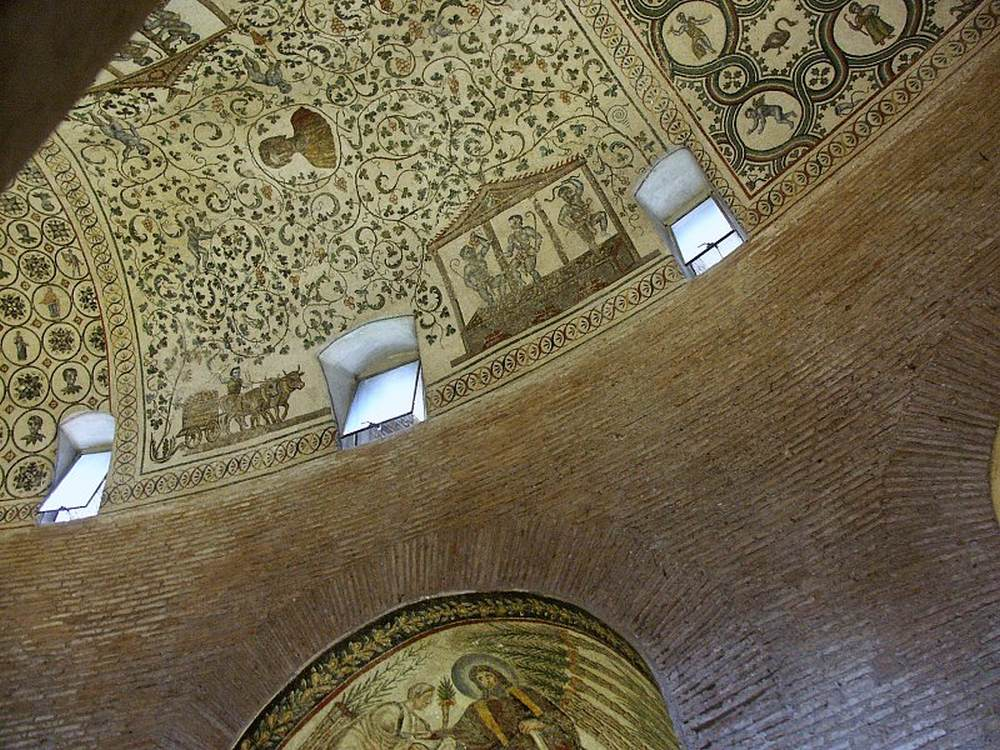
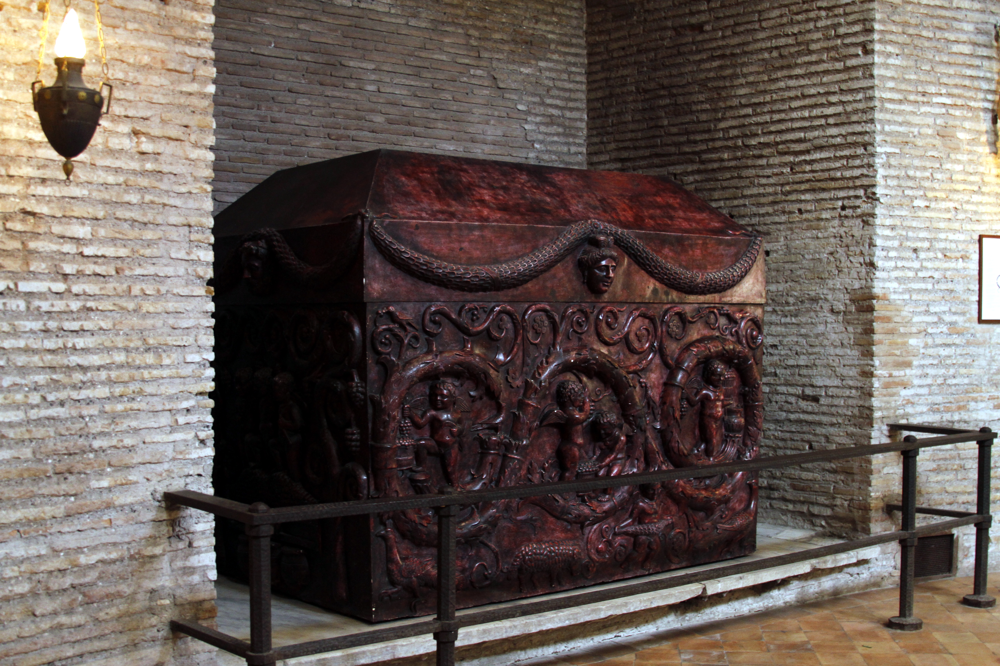
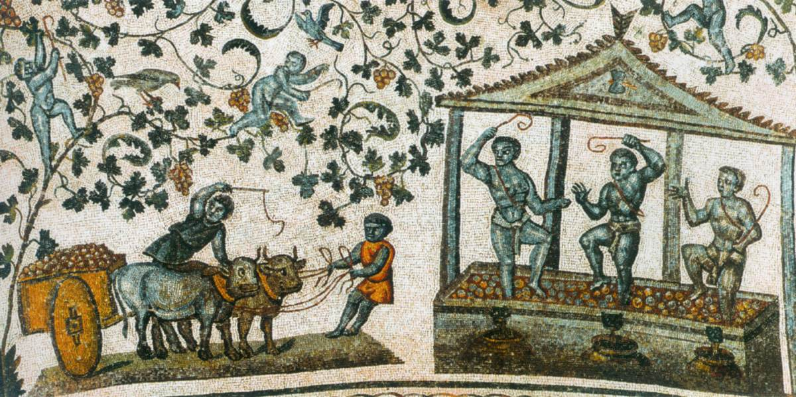

When Constantina, daughter of Emperor Constantine the Great, died in Bithynia in 354 CE, her body was returned to Rome. She was buried in a mausoleum on the Via Nomentana, alongside the basilica of Sant'Agnese fuori le mura. The building still stands, though it is now known as the Church of Santa Costanza. What remains inside — and what was later removed — tells a story about the moment when one world was becoming another.
The mausoleum is circular, with an ambulatory surrounding the central space. And above that ambulatory, covering the annular vault, are mosaics that have survived seventeen centuries. They do not depict Christian saints or biblical scenes. They show something older: cupids harvesting grapes, treading wine, loading carts. Vines scroll endlessly across the curved surface. Birds perch among the leaves. The grape harvest unfolds as if it will never end.

Pagan memory and Christian eschatology meet through a shared symbolic language — one capable of speaking about death without depicting it.
These scenes draw directly from earlier Bacchic imagery, where wine signified vitality, excess, and transformation. But within a Christian context, they are neither erased nor rejected. Instead, they are reinterpreted. The grape harvest that once belonged to Dionysus could now speak of the Eucharist, of Christ as the true vine, of resurrection and eternal life. The imagery survived because its meaning could shift.

the sarcophagus
Below those mosaics once stood the sarcophagus itself — a monumental coffin carved from red porphyry, the imperial stone. Porphyry was quarried only in Egypt, and its use was reserved for emperors and their families. The color alone declared rank.
The relief decoration continues the theme from above. Cupids, amidst vine scrolls, gather and press grapes. The long sides show other subjects from the Dionysiac repertory: peacocks, rams, and putti bearing garlands. The imagery is not subtle. It announces continuity — from ceiling to coffin, the same vines unfold.

Interestingly, a fragment of a porphyry sarcophagus once at the Church of the Holy Apostles is almost identical to this one. The similarity suggests they were contemporary and made in the same place — perhaps Egypt, where the stone was quarried and where skilled workshops knew how to carve it. This was imperial production, repeatable, but no less meaningful for that.

the journey
The sarcophagus did not stay where it was placed. Between 1467 and 1471, it was removed to Piazza San Marco in Rome — a strange relocation for a tomb. Then, in 1790, it was taken into the Vatican Museums. The journey required a cart dragged by forty oxen. The stone is that heavy. The empire it represented had been gone for over a thousand years.
What does wine promise beyond life? At Santa Costanza, the answer is not spoken. It is shown — in an image of passage rather than conclusion.
Today, the sarcophagus rests in the Museo Pio-Clementino, supported by four lioness figures carved by Francesco Antonio Franzoni in the 18th century. The original supports, whatever they were, did not survive. A copy of the sarcophagus now stands in Santa Costanza, where the original once lay beneath the vines.

what survives
Across cultures and periods, vines, grapes, and wine have repeatedly served as metaphors for transformation, rebirth, and continuity beyond the individual life. Their presence in funerary architecture reflects not consumption, but becoming — an image of passage rather than conclusion.
Santa Costanza offers a quiet proposition: that wine, long bound to earthly pleasure, could also articulate hopes of eternity. The cupids still tread the grapes. The vines still curl across the vault. And below, where the stone coffin once stood, the same visual language unfolds — linking imperial power, pagan memory, and Christian eternity.

The daughter of an emperor was buried beneath images of wine. Not because she drank it, but because wine could say what doctrine alone could not: that death is not an ending, but a pressing. That what goes into the darkness comes out transformed.
sources
- Vatican Museums — Sarcophagus of Constantina
- Carnevale and Monaco, "The Mausoleum of Santa Costanza in Rome"